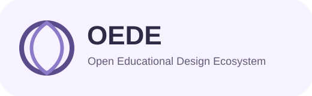
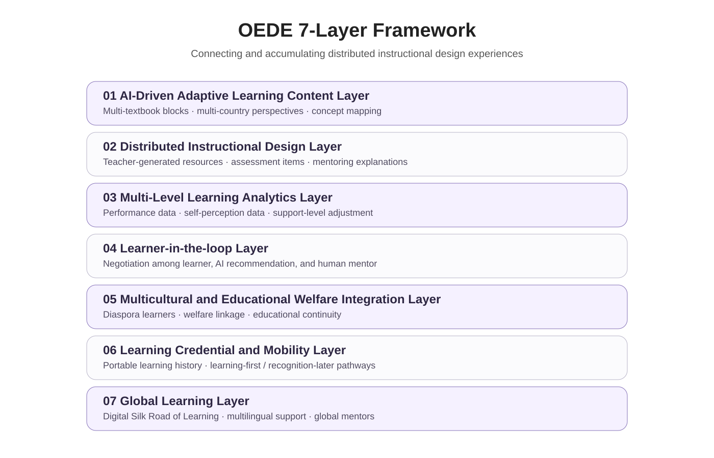

문제의식
OEDE의 출발점은 교육 자료의 부족이 아니라, 학교 현장에 흩어져 있는 수업 경험·평가 문항·설명 방식·멘토링 자료가 서로 연결되고 다음 세대의 교육 자산으로 축적되기 어렵다는 점에 있다.

OEDEOEDE Research Prototype
교사의 분산된 교육설계 경험을 연결하고 축적하여, 학습자가 학교·지역·국가를 넘어 자신의 학습을 지속할 수 있도록 돕는 개방형 교육설계 생태계.
Research Positioning
OEDE의 출발점은 교육 자료의 부족이 아니라, 학교 현장에 흩어져 있는 수업 경험·평가 문항·설명 방식·멘토링 자료가 서로 연결되고 다음 세대의 교육 자산으로 축적되기 어렵다는 점에 있다.
OEDE는 기존 교과서나 학교 체계를 대체하기보다, 다중 교재·교사 경험·학습 분석·멘토 네트워크·학습 인증을 연결하여 학습 연속성을 보완하는 구조로 제안된다.
Architecture

다중 교과서와 다국가 관점을 블록형 학습 자료로 구조화한다.
교사·예비교사·퇴직교사의 교육설계 경험을 공유 가능한 자산으로 축적한다.
객관적 수행 자료와 학습자의 자기 인식 자료를 함께 분석한다.
AI 추천, 학습자 의견, 대학생 멘토 조언이 협의되는 조정 구조를 제공한다.
다문화·이주배경·학습 소외 상황을 교육복지 자원과 연결한다.
학교·지역·국가 이동 상황에서도 학습 이력과 성취가 이어지도록 관리한다.
언어와 국가를 넘어 개념 중심 학습 자원과 글로벌 멘토 네트워크를 연결한다.
High-resolution UI Mockups
학교, 교재, 교사 및 멘토를 중심으로 학습 경로를 설계하는 개인화 공간.
교육 자산을 통합 관리하고 필요에 따라 선택·조합하도록 지원.
체감 난이도와 AI 분석 차이를 인식하고 조정하는 협의 화면.
러시아 고려인 학습자가 서울 양정중학교로 이동하는 상황을 가정한 학습 이력 연계.
국가·언어·지역을 넘어 교육 자산, 멘토, 복지 지원, 학습 인프라를 조정하는 운영 화면.
Conceptual Cycle